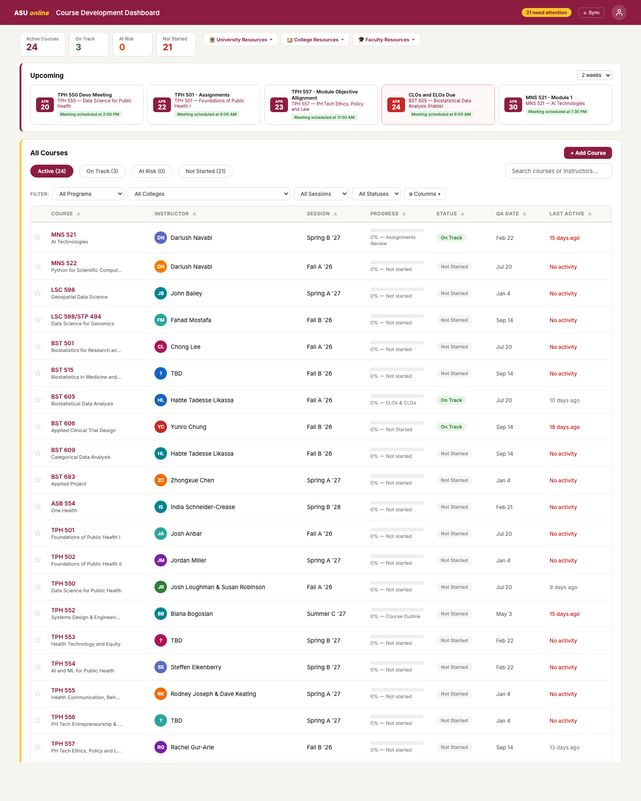
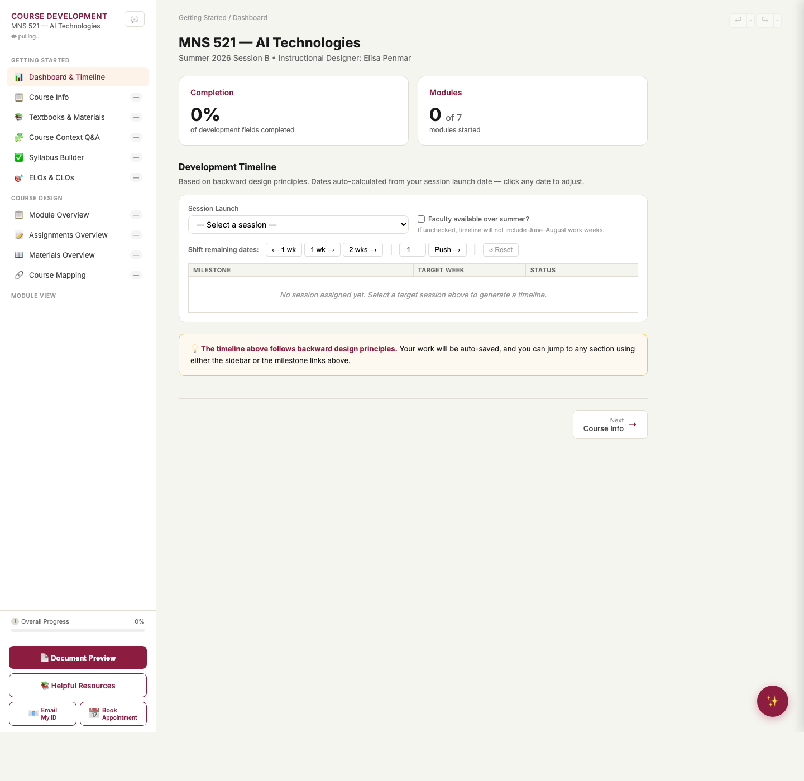

Designer & Developer
Course Design Tool
A unified ID workspace — dashboard, backward-design worksheet, and AI-assisted course building — that turns a sprawling set of spreadsheets and docs into one coherent workflow.

The ID Dashboard — 24 courses at a glance, with status, progress, QA dates, and upcoming meetings.
What it is
Course design at ASU Online involves dozens of moving parts — course-level outcomes, enabling objectives, modules, assignments, materials, textbooks, syllabus, accessibility, QA deadlines — spread across folders, sheets, and Canvas itself. This tool consolidates that work into two linked views:
- ID Dashboard — a portfolio view for an instructional designer: active courses, status (On Track / At Risk / Not Started), progress bars, upcoming meetings, filterable by program, college, and session.
- Course Worksheet — a single-course workspace with sections for course info, CLOs and ELOs, module overview and detail, textbook selection, context Q&A, and document preview, all stitched together by a backward-design timeline auto-calculated from the session launch date.
How it was built
- Static, single-page architecture. The tool is two pages of plain HTML/CSS/JavaScript (
id-dashboard.htmlandcourse-worksheet-v2.html) — no framework, no build step. It ships as a static site via GitHub Pages. - Structured local state. Activities and materials are stored as typed objects in
localStorage, which unlocks cross-module operations (drag-and-drop between modules, card/table view toggles, dynamic rendering) without a backend. - Supabase for collaboration. Inline commenting runs on Supabase — text highlighting, comment threads, resolve/delete, and URL-based identity via
?user=, so faculty reviewers can leave targeted feedback without creating accounts. - AI-assisted authoring. The Anthropic Claude API generates quizzes (MC / T-F / short-answer with correct toggles and feedback), Canvas-compatible rubrics, and design-assistant guidance — keeping the content sources of truth in the author's hands but accelerating the busywork.
- Google integrations. Templates export to Google Drive; a Google Apps Script–backed sync keeps dashboard data aligned with the ASU course development calendar.
What it solves
- Portfolio visibility. Instead of tracking 24 courses across scattered sheets, an ID sees a live status board with at-risk callouts, upcoming QA dates, and a running count of courses needing attention.
- Backward design, on rails. The development timeline auto-generates milestones (CLOs/ELOs Review → Module MLOs → Assignments → Materials → Alignment Audit → Module 1…N) from the session launch date, with one-click "shift 1 week / 2 weeks" controls when reality bends the plan.
- Objective tagging. Every assignment and material can be tagged to its CLO and sub-ELO (1a, 1b, …), exposing alignment gaps the moment they appear rather than in an audit weeks later.
- One-to-many CLO → ELO mapping. A single course-level outcome can decompose into multiple enabling outcomes, mirroring how the curriculum actually works instead of forcing a flat 1:1 list.
- Feedback where the work lives. Reviewers highlight any text in the worksheet and leave threaded comments — no separate Word-track-changes cycle, no lost context.
Inside the worksheet

The worksheet view — sidebar sections on the left, live completion and module tracking on the right, and a Document Preview button that generates a shareable export.
Selected release highlights
- 1.0 — ID Dashboard, multi-section worksheet, Supabase commenting, Claude design-assistant, Google Drive export, GitHub Pages deployment.
- 1.1 — Activities and materials as a structured data model, cross-module drag-and-drop, card/table toggle, Assignments and Materials overview views.
- 1.2 — Quiz builder with AI generation, AI rubric generation (Canvas-compatible), interactive objective picker, course objective and module MLO accordions.
- 1.3 — One-to-many CLO→ELO mapping with sub-labels, inline content toggles on overview pages, editable table views, template visibility fix.
Full changelog on GitHub.